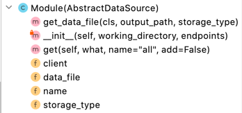
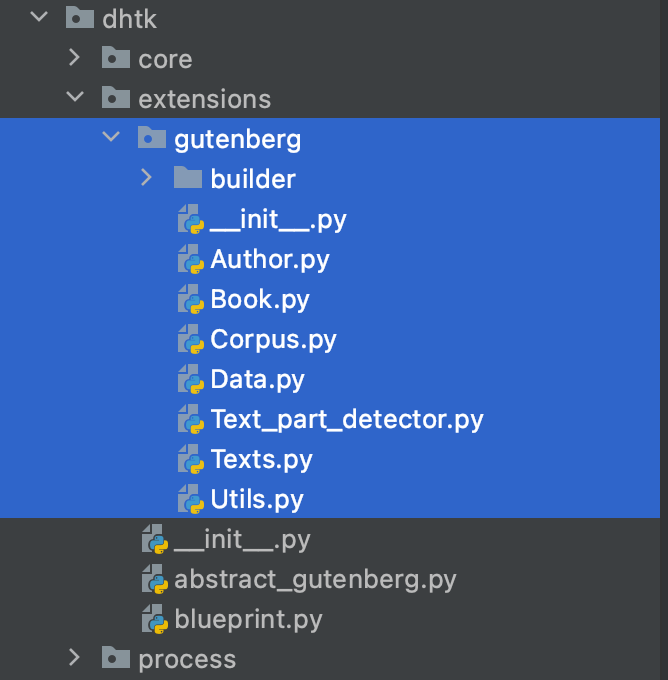

Developer's Guide
DHTK is an open-source team effort. Contributions are essential to our survival and growth. We are thankful for any contribution and are happy to welcome you to the DHTK community!
You can contribute to DHTK in many ways: - Contribute to the development of new extensions - Sending us feedback with suggestions or let us know of any issue you run into while using DHTK. - Add or modify minor functionalities to DHTK
New data sources
If you would like to integrate a new dataset to DHTK, please write to Davide Picca to let us know!
DHTK modular structure is thought out to simplify integrating new modules, features and datasets. DHTK is technically divided into three parts as described in the documentation page. The three parts are organised in separate directories (core, data sources, storage) for easier identification and navigation during development. This guarantees that the new data sources functions as a self-contained module, independent of the core DHTK modules.
Set up DHTK
- Please visit our GitHub page to find detailed information on how to contribute.
- Add an issue to the repository to let us know what you will be working on and request the access1.
- Clone the DHTK repository and create your own branch.
Develop module
- Develop you module independently.
- Remember to re-use (import) functions and classes already available on DHTK (how to add/modify helpers)
Integrate module
- Creating a new folder under the extension directory with the new module's name.
- If you're using a new curated dataset, make the RDF file available (see RDF Dataset)
- Integrate your module (after testing) into DHTK's framework (see Integrating new modules)
- Submit your changes for review as a pull request.
Your request will be discussed and reviewed and soon as possibly using the normal Github interface.
Integrating new modules
DHTK core module is responsible to locate and load any module within
the data source directory. Due to the modular architecture of DHTK, these
data sources can be easily developed as self-sufficient Python modules,
which are integrated into the DHTK framework through their path
dhtk.data_sources.gutenberg for example.
Note:
All dhtk data sources should be named dhtk.data_source.DATASOURCE_NAME (i.e. dhtk.data_source.gutenberg) so
that everyone can find them on the net.
Procedure
We provide 4 different data storages already setup
and ready to use.
- dhtk_data_source_dummysql: blueprint package to be used if you need SQL storage (MariaDB)
- dhtk_data_source_dummynosql: blueprint package to be used if you need NoSQL storage (MongoDB)
- dhtk_data_source_dummytei: blueprint package to be used if you need XML-TEI storage (BaseX)
- dhtk_data_source_dummytriplestore: blueprint package to be used if you need RDF storage (Fuseki)
Creating a data source

- Clone one of the 4 bleuprint available
- Define
nameanddata_filevariables as shown in Figure 1 - Complete the Module class by defining at least the required
attributes and methods:
get_data_file,__init__andget - Update the
README.mdandsetup.pyto make the module installable.
Data source integration into dhtk
The DHTK AbstractDataSource abstract class contains most of the required
methods to prepare a module for use. The new Module class is
essentially a wrapper around a DHTK data source, defining the attributes
name and url (name of the data source and location of the RDF data
file to use on with the local SPARQL endpoint), and the methods to
query and save the results. Any additional method that improves the
Module class can be freely included.
*Gutenberg example*
1. Create a module specific directory: The gutenberg subdirectory was created on the dhtk's extension directory. All the files from the previously tested independent module are moved to this folder.

2. Add the class named Module to the __init__ file
3.1. Defining attributes
The general attributes name and url can be defined withing the class' __init__ method:
- name defines the the name of the module and should be the same as the directory place under dhtk/extensions
- url define the remote location of the dataset to be set up locally.
note
More specific attributes are defined to better integrate the gutenberg module: _corpus and wrapper. In this case, _corpus is used store retrieved books while the wrapper attribute is used to reference the GutenbergData "query" object
3.2. Defining .get and .save methods
Two methods are required to be defined: .get() and save().
The get(what, name, add) provides functions as the main point for DHTK integration. This method takes three arguments, converts then into SPARQL queries using a conditional logic and calls the correct module functionalities to retrieve information.
- what: a string value determining what is being searched for (e.g. books, authors). This value is evaluated by a conditional if-then-else logic, wrapping around the main module query calls with a user-friendly and unified framework.
- name: a string value identifying of what is being searched (e.g. book name, author name). This value is used to narrow down the general query defined by what, retrieving specific instances.
- add: a boolean value defining if the query results should be added to the records (e.g. corpus) or if the user wishes to search interactively instead.
The records generated when using get(add=True) are used by the .save() method to store all the retrieved data on disk by calling all relevant methods from the extension.
3.3. Defining additional methods
Gutenberg's Module class contains two extra methods. The suggested welcome() method automatically provides the user with the dataset statistics. This method is automatically called when a module is loaded, and can be used to provide the user with any (or no) information.
The corpus method is not defined in parent AbstractExtension class, but it provides a simpler way to modify a corpus' settings and retrieve its representation, being a convenient intermediate method to search for book and author information.
Feedback and issues
As DHTK grows, we aim to make it more efficient, simpler and contain more functionalities relevant to the Digital Humanities' community. Even if you do not have the computational expertise to program in Python, you can contribute as part of the DHTK community by letting us know how to improve DHTK to best fit your research needs.
If you have any question, suggestion or feedback please write to Davide Picca \<https://www.unil.ch/sli/davidepicca>
All suggestions and feedback are welcomed!
Minor changes
If you think DHTK is missing some simple functionality or could be made simpler and easier in some way, and you want to contribute by helping us implement those changes, thank you! However, before you do so, please write to Davide Picca to let us know!
As a collective effort, we remain an open to everyone's contributions. Everyone can add or modify any function, class or method to improve DHTK usability of an existing DHTK module easily:
- Please visit our GitLab page to find detailed information on how to contribute.
- Add an issue to the repository to let us know what you will be working on.
- Clone the DHTK repository and create your own branch.
- Address the issue by modifying and testing the code locally.
- Submit your changes for review as a pull request.
Your request will be discussed and reviewed and soon as possibly using the normal Github interface.
RDF Dataset
If the new extension module uses a new pre-processed dataset, the finalised RDF file should be made available to download so it can be added to the local Fuseki endpoint. These files can be stored in any remote location, as long as freely accessible, though we would recommend using Zenodo.
For reproducibility and transparency, the full pipeline used to produce the provided RDF file (including clear instructions on how to use it) should also be made available under the "builder directory" of the module (e.g. dhtk/extensions/gutenberg/builder/)
-
DHTK will be soon publicly available. ↩